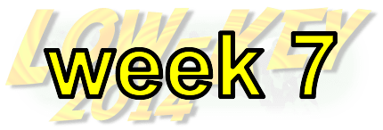

|
 |  |
RSVP for today's climb after the previous week's climb!
| results? | right here! |
| profile |  |
| distance | 3.01 miles (4.8 km) |
| climbing | 1032 ft (314 meters) |
| grade | 6.51% |
| where? | see below |
| when? | 15 Nov 2014 |
| what time | check-in 9:00 to 10:00 climb starts @ 10:10 |
| RSVP | check back later! |
| waiver | Please fill one out before the climb! |
| how? |  |
| how much? | $10 (free for juniors and those with volunteer credit) |
| why? | Ask not why; just do! |
| coordinator | |
| volunteers | sign up! |
| weather | Bay area winds |
| deja-vu? | New! |
Sorry, folks! Our insurance requires all riders wear helmets during the climb, and we follow the USA Cycling rule against ear buds or other head phones. Rock to tunes before the climb, perhaps, but we need riders to pay attention to what's happening during the climb...
The start will be at the John F. Kennedy Elementary School on Price Street just off Guadalupe Canyon Road.
Guadalupe Canyon is a continuation of East Market Street in Daly City. From the south, you can drive 280 to the Junipero Serra/D Street exit. Take that to Junipero Serra Blvd which will take you soon after to San Pedro (map). Turn right there. The first big intersection is Mission (map). Cross that to East Market which will lead you to Price and the school on the left (map).
Directions driving from the north are comparable.
Another driving option is to park on the east side of Guadalupe Canyon. You can park either in Brisbane, near the insustrial parks, or at the Cow Palance, near Carter. These options provide nice warm-ups riding up and over Guadalupe Canyon Road.
Non-volunteers please park along the street near the start, or in Daly City near Market, or wherever you choose except for the school lot. At Low-Key we don't like clogging up parking lots of the starting area. Satellite view of local streets.
Riding to the start from San Francisco is easy. Take Mission all the way to East Market, turn left there, and ride that to Guadalupe Canyon Road where Price will be on the left. An alternate is to ride south to Bayshore near the bay, then climb up and over Guadalupe Canyon from the east. This will provide an excellent warm-up and you'll probably climb faster as a result.
There's also excellent public transit options this week.
There's two excellent public transit options this week (for a change)!
One option is BART to Colma Station, which is close to San Pedro. Ride San Pedro east, cross Mission, and ride East Market (becomes Guadalupe Canyon) to Price on the left (T-intersection). Here's Google Map directions. The BART schedule is here.
The other option is Caltrain. The closest station is Bayshore. From Bayshore, you can ride south on Tunnel (which parallels the tracks to the east, cross over the bridge, turn right on Bayshore (T-intersection), then left on Guadalupe Canyon. You'll ride up and over Guadalupe Canyon to reach Price, a fine warm-up for the climb. Route directions are here. It's 5.5 miles which Google predicts will take 44 minutes. The earliest trains arrive from the south at 8:23 am (the one an hour later gives you just enough time if you hurry), and from the north at 8:25 am (again, the onr an hour later will get you there by 10 am if you ride quickly). The Caltrain schedule is here (make sure to look at the weekend schedule).
Volunteers make Low-Key tick! Without them, we no longer function. Please sign up for any week in the series using our volunteer form! Thanks!!!
Low-Key is all about a group of friends riding up a hill together. It's like any other informal group ride, except we time you to the top and report the results on our web site. But we have no road closures, no lead vehicle, no follow vehicle. We are traffic, sharing the roads with other traffic, following the laws and courtesy which applies to traffic. Think of it as a human-assisted Strava. We're each responsible for our own actions out there, on and off the bike, both as users of the road as as courteous visitors to the neighborhoods we pass through. "Ceci n'est pas un race".